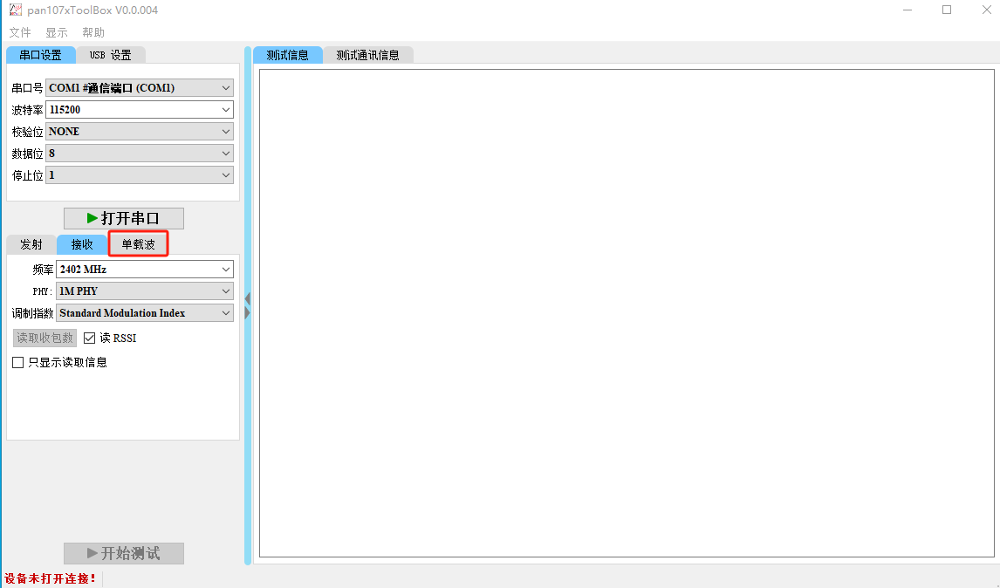

RF Test¶
1 功能概述¶
本文主要介绍 PAN107x RF测试固件的使用。
2 环境要求¶
PAN107x EVB 若干块
USB转串口工具若干块
硬件接线：
使用杜邦线连接EVB 和USB转串口工具:
ICEK(P01)与 USB转串口工具TX连接
ICED(P00)与 USB转串口工具RX连接
PAN107x ToolBox 下载
USB TYPE-C线
3 RF测试固件说明¶
NO |
固件说明 |
下载链接 |
更新日期 |
|---|---|---|---|
1 |
RF性能测试(发射功率、频偏、EVM、107和107对测收包率等) |
2024-06-07 |
|
2 |
RF信号采集测试(RSSI) |
2024-04-07 |
4 演示说明¶
PAN107x EVB板PIN脚接线说明：
PAN107x EVB板GPIO |
USB转串口工具 |
|---|---|
ICEK_uart1_rx(P01) |
UART_TX |
ICED_uart1_tx(P00) |
UART_RX |
VBAT |
VCC(3.3V) |
GND |
GND |
4.1 RF性能测试（串口模式）¶
RF 测试支持 2 种模式，第一种是采用标准仪器进行测量（cmw500），另一种采用 PAN107x tool box工具进行射频测试。
4.1.1 标准射频测试¶
下载 PAN107x RF测试固件
烧录.hex程序，烧录流程可参考 J-Flash 烧录方法 或 Panlink 烧录方法 ，烧录成功后板子重新上电。
连接串口，然后然后连接仪器（cmw500）的串口和射频接口
4.1.2 PAN107x Tool Box 工具进行射频测试¶
用panlink或者j-flash烧录固件”PAN1080 RF测试固件 ”。
PAN107x 的测试固件可在PAN107x ToolBox工具中导出，如下图所示，也可使用路径”05_TOOLS\RF测试固件\PAN107x RF测试固件.zip”。
烧录流程可参考 J-Flash 烧录方法 或 Panlink 烧录方法 ，烧录成功后板子重新上电。
测试流程可参考 PAN107x 工具箱用户指南中的第一章RF测试。
uart波特率:115200
典型的测试场景
TX 测试，可以通过软件发送单载波和dtm数据包（下图是一个单载波的典型配置界面），通过频谱仪观察射频状况

图-1 单载波配置界面¶
RX 测试可以打开2个软件，控制2个107x芯片，一个设置为tx模式，一个设置为rx模式，tx 端设置 tx counts 发送， rx 端打印收到的 counts，进而判断 rx 的 质量和灵敏度。
4.4 RF 信号采集测试¶
用panlink或者j-flash烧录固件”RSSIVIEWER_BAUD115200_P00RX_P01TX_V001.hex“。
测试固件可在PAN1080 ToolBox工具中导出，也可使用路径”5_Tools\RF测试固件\PAN1080 RSSI VIEWER测试固件.zip”。
烧录流程可参考 J-Flash 烧录方法 或 Panlink 烧录方法 ，烧录成功后板子重新上电。
测试流程可参考 PAN107x 工具箱用户指南中的第四章RF信号采集。